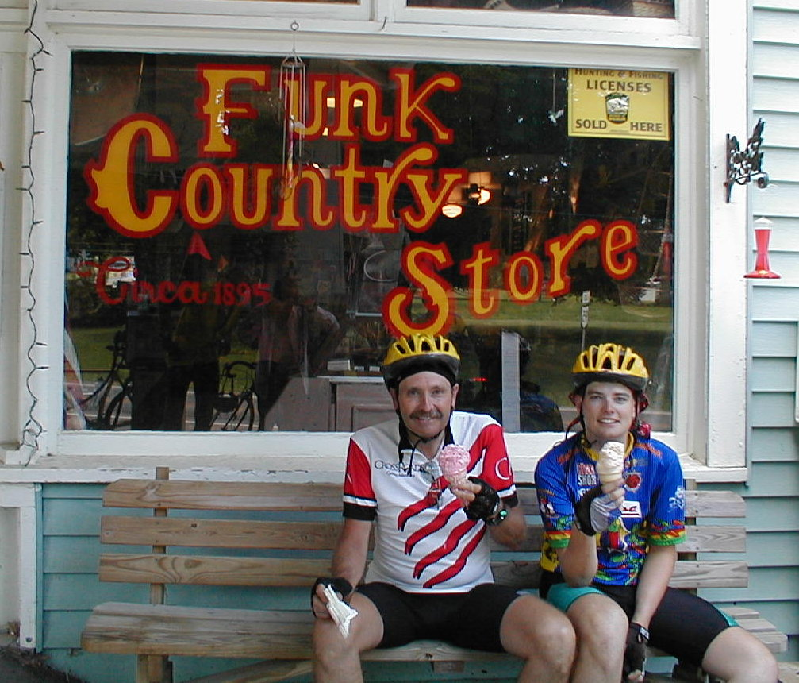

Day 37: June 18, Marysville, OH to Wooster, OHPrevious Day - Home - Next Day Photo of the DayEnjoying a large ice cream at the Funk Country Store. Keegan's LogDay 37: June 18, Marysville, OH to Wooster, OH Mileage: 100.00 milesWeather: Mostly sunny, High in the low 90s, Varying light winds Vertical Climb: 1850 feet Riding Time: 6:45 Today began with another Bob Evan's breakfast, and as usual the food left a little to be desired. We were rolling by 7:10, we quickly made our way to the back roads. The ride was nice in the morning, we saw a few hot air balloons enjoying the weather as well. We stopped at a little store about 25 miles into the ride for a coke and a short break. The roads were pretty flat and straight in the morning, which made the riding go pretty quickly. I had noticed my back wheel was way out of true, we stopped at the first sag at Marengo, I had a chance to look over my bike. My suspicions were correct, this time I had two broken spokes (never, ever have a wheel build by Hodson's Bay). Luckily Pat pulled in a few minutes later, he pulled out his tool box and within 15 minutes I was ready to roll again. Pat is a pretty amazing mechanic, I don't think there's a problem that he can't fix in 15 minutes or less. After the first sag the road got a little hillier, but the hills were still fairly small and far between. The tows were also well spread out, so we decided on an early lunch in Fredrickstown. We joined Chuck and Gene, a few others stopped by as well, I had the usual grilled ham and cheese with a side of fries. From there it wasn't far to the second sag, perched at a gas station atop a long hill. We cut this sag a little short as we were running pretty far back in the pack already, so before we knew it we were off to ride the last 30 miles. The last stretch was very hilly, long hills that seemed to go up far longer than they went down. The surrounding countryside was beautiful, you could see the long rows of crops arcing over the top of the rounded hills. There were groves of trees casting speckled shadows onto the road, and providing the occasional shade for the long climbs. The winds became light headwinds during this stretch too, but we were moving slowly enough that it didn't make much difference. We made a stop at the Funk Country Store, a rustic general store in a small town, for two large ice cream cones. We ended up stopping for quite a while, the ice cream cones really hit the spot. We rode from there to the hotel, arriving just before 4:30. I had 99.6 miles when I pulled in, so I rode an extra lap around the hotel to bring the total to exactly 100.00 miles, a perfect century! For dinner we walked to the dining room of the Econo Lodge, the hotel next to us, and ate a meal catered by the Country Kitchen, the restaurant next door to the Econo Lodge. We were confused too, but too hungry to worry about it much, so we dug into the buffet instead. Tomorrow we head to Niles, another 90+ mile day, but this time we have less climbing than today. Phil's LogI had never thought of Ohio as paradise, but it was another day in bicycle paradise. Perfect weather, cool and crisp. Blue skies. Recent rains left the late spring countryside lush and verdant. The ride was 98 miles. We almost immediately rode through Delaware, Ohio, where my sister had attended Ohio Wesleyan University (but was graduated from the U of Rhode Island.) We continued on following State Roads 24 and State Road 95. It was a perfect route, much of it on the Cardinal Trail again. There were more pretty farmhouses ad barns than George Eastman could manufacture film to capture. There was an old John Deere B chugging through a field, pulling hard. What a wonderful sound! Mile 68.1 brought a river under a bridge. We stopped to just listen. No sound but that of nature. Birds, all kinds, and the flow of water over rocks. We just listened. Tracy has done a wonderful job picking this route. Ten miles from the end we rolled into Funk, Ohio. There was a flood there in 1969, there isn't much today except the Funk General Store. Keegan said, "Order a large ice cream cone, it's only 30 cents more." So I did. Strawberry. I hope he runs that photo. I rolled into Wooster feeling still pretty perky, 95 miles on my odometer. Keegan peeled off for the hotel while I headed for downtown. The courthouse looked fascinating. I also bounced around looking for the Wooster Brush Company building from 1851, gone now it seems. I rolled into the hotel at 100.5 miles. For Father's day, I had done back-to-back centuries with my son, pretty neat! 93 miles tomorrow, to Niles, Ohio. Weather looks good, and we're ready for an easy(?) day? |
{kind=link}